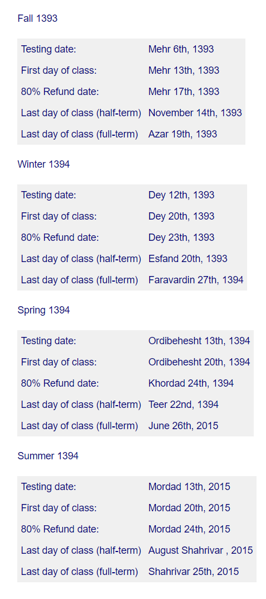

Intensive English
Overview
The Intensive English Program is a course that has been designed to help students make the movement to real academic life in a relatively short time through fulltime instruction in English as a foreign language.
The Intensive English Program prepares students for the TOEFL® examination and students are tested prior to the first day of class. Based on the test results, each onf of the students is placed in the most suitable level.
In each level, students receive grades for written examinations, oral presentations, class participation, and out-of-class work. After completing the final level most of our students will beready to pass the TOEFL®.
Dates

ELTPD
CDS Placement Test is an exam that determines the linguistic level of an applicant seeking to register in a language course at our English Language Tests Preparation Department (ELTPD).
The test is designed according to the highest testing standards and it is completely target-oriented. In ELTPD Placement Test two language areas of grammar and vocabulary as well as two skills of listening and speaking are precisely evaluated.
The test is administered in two Oral and Written formats:
The Written Test is comprised of 80 multiple choice questions including 10 listening questions, 40 grammar questions and 30 vocabulary questions. This test lasts for 40 minutes.
The Oral Test (or the Interview) is administered immediately after the Written Test and it usually takes 7 to 10 minutes.
At the end of the Interview, the applicant's language level is determined by the Supervisor of ELTPD English Dept. and learners will then be given the go-ahead to register in the language level they are qualified for.
WHAT IS TOLIMO EXAM?
Test of Language by the Iranian Measurement Organization or TOLIMO:
TOLIMO is a standardized test administered by the Educational Measurement and Evaluation Organization (EMEO). It is a multiple –choice exam that lasts about two hours. It is designed to test an English speaker's proficiency in English.
HOW IMPORTANT IS THE TOLIMO
All Iranian candidates for receiving Ph.D. scholarship for other countries have to obtain a satisfactory score on the TOLIMO. The acceptable score levels are announced by the EMEO. Besides, the EMEO intends to make TOLIMO scores a necessary requirement to be used by Iranian universities, for example, all applicants with scores below a certain point-and it is very likely that in future they might be used as a good measure of the applicants' language proficiency in different educational or vocational centers.
HOW IS TOLIMO STRUCTURED
Material for the TOLIMO test is produced at the Iranian Educational Measurement and Evaluation Organization (EMEO). All questions are reviewed for balance according to established EMEO procedures. These reviews ensure that each form of the test is free of any language, symbols, references, or content that might be considered offensive or inappropriate. Each form of the TOLIMO is divided into three sections and it takes approximately two and one-half hours to administer.
Section 1: The Test of Written English-TWE
The Test of Written English is a short 30 minute writing test which is given with TOLIMO. TWE measures the ability to compose in standard written English response to an essay question or topic. TWETotalTimeScore130minute1-6
Section 2:
Listening Comprehension measures the ability to understand conversations and talks in English. This section does not test comprehension of single sentences. Part A (Short conversations) 30 questions. Part B (2 long conversations) 8 questions (4 questions per long conversations. Part C-3 lectures-12 questions (4 questions per lecture.- Total: 50 questions. Time: 35 minutes.
Section 3:
Structure and Written Expression measures the ability to recognize grammatical structures and word usage of standard written English used in colleges and universities. Sentence Completion 15 questions.
MSRT
MSRT is a General English Language Test for entrance examinations of National, Azad and non-profit universities for Master and PhD Programs.
Educational Content:
-Simultaneous concern to both language skills and exam skillsTeaching and enhancing skills of Listening,Grammar, and Reading comprehension.
-Conversation and interview
-Multiple choices exam answering skills training
-Using sample Longman TOEFL tests and English language tests of previous entrance examinations of local and Azad universities for master and Ph.D. programs.
-Holding two mock-test simulating real test.
Educational Quality
After Entrance and Training exams, result diagrams are revised, compared and analyzed by our Evaluation and Tests Creation expertise. Analyses results will then be informed to the department principal, instructors and the learner himself/herself as well to make the necessary changes in the educational contents or methods of teaching for further and more educational and training productivity.
Instructors
Instructors of the courses are universities faculty members.
There are currently six test centres in Iran that hold IELTS exams:
1. KERMANSHAH
Islamic Azad University - Test Location - Kermanshah
More Information
2. RASHT
Islamic Azad University - Test Location - Rasht
More Information
3. SHIRAZ
Islamic Azad University - Test Location - Shiraz
More Information
4. TEHRAN
IELTS Tehran - IDP IELTS Test Centre
More Information
5. TEHRAN
Irsafam IELTS Test Centre
More Information
6. TEHRAN
Islamic Azad University - IDP IELTS Test Centre
More Information
کلیه حقوق مرتبط به این وبسایت متعلّق به موسسه اعزام دانشجو کندو دانش آوران سام میباشد
cds.org.ir, Copyright©2015, All Rights Reserved
Design by : BOOMHUNK